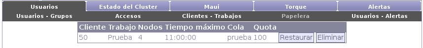

Next: Usuarios - Alertas Up: Usuarios Previous: Clientes - Trabajos Contents
Desde la papelera es posible tanto eliminar como restaurar los trabajos. Si se elije eliminarlos, se borrarán los archivos guardados en disco junto con el resto de la información del trabajo. Si se elije restaurarlos, los usuarios podrán nuevamente tener acceso a los mismos.
